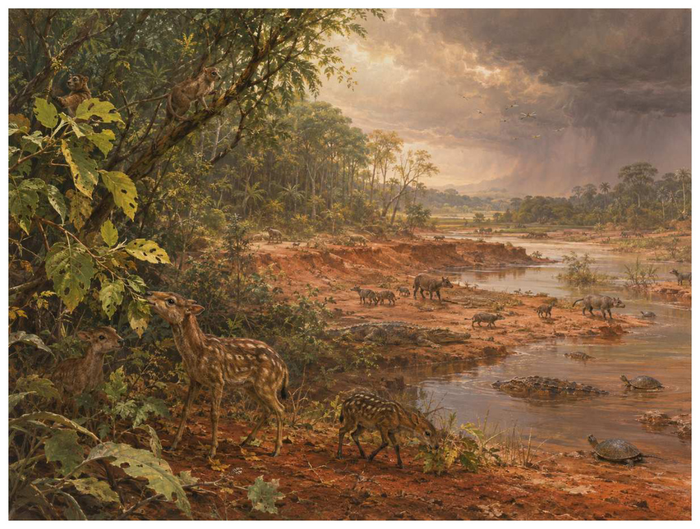

第15篇 · 古新世与始新世：哺乳动物的实验时代 · 第 53 章
始新世温室与奇怪哺乳动物：没有现代答案的生态角色
本篇主题:古新世与始新世：哺乳动物的实验时代
温暖世界中，哺乳动物快速尝试今天已消失的大量身体方案。

本章科学复原配图 （用于呈现结构与生态关系, 不替代化石照片、测量数据与系统发育证据。）
如果把演化树看作不断生长又不断被修剪的枝丛，约5600万至3390万年前是其中关系重新布置的一段。始新世早期全球极暖，高纬度森林向北延伸，哺乳动物在大陆间扩散。奇蹄类、偶蹄类和灵长类冠群逐渐出现，同时雷兽、恐角兽、安氏兽、古食肉兽和南美特有支系形成今天没有直接对应的组合。它们并非拙劣试作品，而是在森林、湿地和开阔斑块中持续成功数百万年。气候后来降温、植被改变和新竞争者出现，才使部分支系收缩。
进入这个时代
若真正置身其中，首先感受到的是介质本身：水是否含氧、地面是否稳定、空气是否干燥、植被是否遮挡视线。身体结构只有放在这些条件中才有意义。始新世森林里，恐角兽顶着多对角状突起穿过湿地，雷兽用巨大头部和角状结构进行展示或竞争，树冠中早期灵长类跳跃。河道边则有仍保留后肢的早期鲸。动物外形看似超现实，是因为今天只剩生命树的一小部分枝条。
在“始新世温室与奇怪哺乳动物：没有现代答案的生态角色”所覆盖的时间里，不能把地理与气候当作固定背景。海陆位置、海平面、河流或植被结构会改变资源可达性，同一性状在不同地区可能得到完全相反的选择结果。
以始新世温室与奇怪哺乳动物：没有现代答案的生态角色为例，旧结构被重新利用是宏演化的常见路径。自然选择无法从零绘图，只能修改已有骨骼、膜、基因调控和生活史。后来承担新功能的结构，往往最初因完全不同的局部收益而扩散。 在本章中，这一约束具体落在“温暖森林提高果实和叶片资源并连接高纬度迁徙通道”这条关系上。
再从约5600万至3390万年前的时间尺度看，亲缘与外形不能混为一谈。相似身体可能来自共同祖先，也可能来自趋同；过渡类型也不是两类动物的机械拼接，而是当时能够正常摄食、运动和繁殖的完整生物。 它与“大型头部展示结构”共同决定了后续变化可以沿哪些路径发生。
生态系统如何运转
在约5600万至3390万年前，“温暖森林提高果实和叶片资源并连接高纬度迁徙通道”把环境条件转化为生物之间的差异。相同气候并不会平均影响所有支系，因为它们利用的食物、水层、底质和繁殖地点并不相同。
围绕“温暖森林提高果实和叶片资源并连接高纬度迁徙通道”，还要考虑空间异质性。一项在浅海、河谷或林冠有效的策略，移到深水、干旱内陆或开阔地便可能失去优势。因此同一支系常出现区域性扩张，而不是全球同步取代。 对始新世温室与奇怪哺乳动物：没有现代答案的生态角色而言，这一后果还会与“大陆隔离让相似生态位由不同支系独立占据”相互放大或抵消。
本章的一条关键关系是“大陆隔离让相似生态位由不同支系独立占据”。它首先改变资源在个体之间的分配：能更早发现、处理或占据资源的种群获得收益，而另一方会承受新的选择压力。
围绕“大陆隔离让相似生态位由不同支系独立占据”，这一机制也会留下间接证据：咬痕、修复伤、足迹密度、粪化石、牙齿磨损和群落年龄结构分别记录不同环节。只有多种证据方向一致，行为解释才应上调可信度。对始新世温室与奇怪哺乳动物：没有现代答案的生态角色而言，这一后果还会与“降温和开阔化后来筛选牙齿、奔跑与耐旱能力”相互放大或抵消。
“降温和开阔化后来筛选牙齿、奔跑与耐旱能力”体现了生态系统的反馈性。一方结构或行为稍有改变，另一方的防御、逃避、繁殖和空间选择就会重新排列，长期累积后才形成宏观演化差异。
围绕“降温和开阔化后来筛选牙齿、奔跑与耐旱能力”，从演化树看，相似关系可能在远亲中反复出现。功能相近不必意味着近缘，而同一祖先结构也可能被后代改作完全不同的用途；生态解释必须与系统发育互相校验。 对始新世温室与奇怪哺乳动物：没有现代答案的生态角色而言，这一后果还会与“温暖森林提高果实和叶片资源并连接高纬度迁徙通道”相互放大或抵消。
关键演化创新
在“始新世温室与奇怪哺乳动物：没有现代答案的生态角色”中，围绕“大型头部展示结构”，从共同选择角度看，“大型头部展示结构”可能先服务旧功能，后来才参与今天最熟悉的用途。把最终功能倒推成起源原因，会把演化误写成有目的的工程。 它首先需要在约5600万至3390万年前的生态条件下产生可测量收益。
就“大型头部展示结构”而言，研究者通过近缘支系比较、发育同源、关节活动、微观组织和出现顺序重建这条路径。真正有价值的过渡化石不是“半成品”，而是证明中间组合可以独立生活。 本章把它与“现代有蹄类早期分叉”并列，是为了显示复杂性状往往依赖多部分协同。
在“始新世温室与奇怪哺乳动物：没有现代答案的生态角色”中，围绕“现代有蹄类早期分叉”，讨论“现代有蹄类早期分叉”时，最重要的问题是它解除哪一道限制。只要原有身体在运动、摄食、呼吸或繁殖上受约束，能够稍微缓解约束的变异就可能积累，最终产生看似跃迁的结果。 它首先需要在约5600万至3390万年前的生态条件下产生可测量收益。
就“现代有蹄类早期分叉”而言，它的成功具有条件性。环境稳定时，专门化可提高效率；危机到来时，同一专门化可能限制食物和栖息地选择。演化创新因此既能开启辐射，也能制造新的脆弱性。 本章把它与“区域性哺乳动物王国”并列，是为了显示复杂性状往往依赖多部分协同。
在“始新世温室与奇怪哺乳动物：没有现代答案的生态角色”中，围绕“区域性哺乳动物王国”，从共同选择角度看，“区域性哺乳动物王国”可能先服务旧功能，后来才参与今天最熟悉的用途。把最终功能倒推成起源原因，会把演化误写成有目的的工程。 它首先需要在约5600万至3390万年前的生态条件下产生可测量收益。
就“区域性哺乳动物王国”而言，这一变化还可能在多个支系中独立发生。若功能相似而解剖来源不同，就是趋同；若结构来自共同祖先但功能改变，则属于同源结构的分化。二者不能仅靠外观判断。 本章把它与“大型头部展示结构”并列，是为了显示复杂性状往往依赖多部分协同。
生命群像：把物种放回生态网络
恐角兽（Uintatherium anceps）
若把镜头从时代拉近到个体，恐角兽（Uintatheriumanceps）会首先进入视野。它生活于中晚始新世，体型约约犀牛大小，两吨级。作为大型森林植食者，它依靠头顶多对骨质突起和巨大犬齿形成独特外观与环境和其他生物发生关系。
对恐角兽而言，它的成功不需要在所有性能上压倒其他物种，只需在特定资源和风险组合中留下更多后代。速度、咬合、装甲、感官与繁殖之间存在预算，某项性能极端化往往意味着另一项被牺牲。所谓“霸主”只是复杂权衡后的区域性结果。 这使“头顶多对骨质突起和巨大犬齿形成独特外观”不能脱离其大型森林植食者角色来理解。
其复原依赖牙齿支持植食，角与犬齿性二型和功能仍需更多个体统计。年代和保存形态通常属于较强证据，体重、速度、颜色和社会行为则需要额外假设。书中把这些层次拆开，是为了让读者知道哪些可视为事实，哪些仍应等待更多材料。
由恐角兽这个案例看，它不是祖先链条上必须跨过的一格。演化树中同时存在许多近缘支系，只有少数留下后代；旁支化石同样关键，因为它们显示某组性状出现的顺序和可行范围。 它在中晚始新世留下的记录，因此同时是第53章所讨论的形态史和生态史的一部分。
雷兽（Megacerops coloradensis）
雷兽（Megacerops coloradensis）存在于晚始新世。现有材料显示其大小约约2至3吨，生态位置接近大型奇蹄类植食者。鼻额部巨大Y形角状结构和低冠牙适合开阔林地让它成为理解本章主题的合适案例，但不意味着同一类群所有成员都采用相同策略。
对雷兽而言，从种群角度看，偶发捕猎和个体伤病远不如长期繁殖率重要。广泛分布的普通个体比一具异常巨大的标本更能代表支系，然而普通个体往往较少进入公众叙事。研究者必须防止把化石收藏偏好误当成古代丰度。 这使“鼻额部巨大Y形角状结构和低冠牙适合开阔林地”不能脱离其大型奇蹄类植食者角色来理解。
科学家并未直接看见它生活，依据是头骨伤痕支持种内冲突，低冠齿使其在环境干燥和耐磨植物增加时受限。现代类比可以帮助提出可检验模型，却不能取代化石；越具体的短时行为，越需要痕迹、内容物或重复病理等直接线索。
由雷兽这个案例看，这个案例还提醒我们，亲缘和生态角色是两件事。近亲可以因资源分化而外形迥异，远亲也能因相似压力而趋同。把它放在演化树和食物网两个坐标中，才不会误写成线性进步。 它在晚始新世留下的记录，因此同时是第53章所讨论的形态史和生态史的一部分。
安氏兽（Andrewsarchus mongoliensis）
在中始新世，安氏兽（Andrewsarchus mongoliensis）以约体型可能接近大型熊，范围很大的身体参与食物网。它不是孤立的“明星生物”，而是大型陆生杂食或肉食者；巨大长头骨与钝裂牙提示强力摄食，但身体几乎未知决定它能利用哪些资源，也决定必须承担哪些成本。
对安氏兽而言，把它放回群落后，结构的意义更清楚。食物并不会平均分布，水深、植被高度、底质和季节把资源切成小块；它的身体让其中一部分资源可被利用，也使它与近缘种错开生态位。种群命运还取决于幼体能否成长、繁殖地点是否稳定以及灾害后是否仍有避难所。 这使“巨大长头骨与钝裂牙提示强力摄食，但身体几乎未知”不能脱离其大型陆生杂食或肉食者角色来理解。
证据核心是仅主要头骨使旧版长腿巨狼复原缺乏基础，亲缘与食性都应保留不确定性。化石记录更擅长回答“结构是什么”，较难回答“每天怎样行动”。足迹、胃内容物、咬痕或胚胎若存在，会显著缩小推测范围；若只有零散骨骼，行为叙述就必须更克制。
由安氏兽这个案例看，它所代表的身体方案后来可能消失，也可能被远亲以不同材料重新发明。生命史因此既有可重复的功能解，也有不可复制的谱系路径。两者结合，才解释现代生物为何既熟悉又偶然。 它在中始新世留下的记录，因此同时是第53章所讨论的形态史和生态史的一部分。
始祖马（Eohippus/Hyracotherium）
认识始祖马（Eohippus/Hyracotherium）要先放弃静态骨架印象。它生活在早始新世，约约犬大小，日常任务是作为森林中取食柔软叶片的小型奇蹄类维持能量与繁殖。前足多趾、低冠齿和弓背身体适合林下穿行只是这一整套生活史中最容易化石化的部分。
对始祖马而言，同域物种的存在迫使它分割时间与空间。相似牙齿不一定吃完全相同的食物，相似四肢也可能适应不同底质；微磨损、同位素和伴生群落常能揭示这种细分。环境改变时，原本减少竞争的专门化又可能成为迁移和改食的障碍。 这使“前足多趾、低冠齿和弓背身体适合林下穿行”不能脱离其森林中取食柔软叶片的小型奇蹄类角色来理解。
判断它的生活方式时，研究者首先使用‘始祖马’包含多属，马演化不是单一属沿直线变大。随后会检验替代解释：同样的牙是否也能处理其他食物，同样的骨骼比例是否由年龄造成，同一骨层是否来自群体生活还是灾难性聚集。排除过程比贴标签更重要。
由始祖马这个案例看，过去的复原常受完整现代动物模板影响，新材料则迫使研究者接受更陌生的身体比例或生活方式。最稳妥的表达是保留估计区间，并明确哪些软组织、颜色和社会行为仍属合理推测。 它在早始新世留下的记录，因此同时是第53章所讨论的形态史和生态史的一部分。
古食肉兽（Hyaenodon）
古食肉兽（Hyaenodon）生活在始新世至中新世，已知体型约为从小型到大型犬级。它在群落中的角色可概括为陆地捕食哺乳动物。最值得观察的结构是长颅和剪切牙在现代食肉目之外独立形成高效肉食。这些结构不是为了后来时代而准备，而是在当时直接影响摄食、运动、防御或繁殖。
对古食肉兽而言，它的成功不需要在所有性能上压倒其他物种，只需在特定资源和风险组合中留下更多后代。速度、咬合、装甲、感官与繁殖之间存在预算，某项性能极端化往往意味着另一项被牺牲。所谓“霸主”只是复杂权衡后的区域性结果。这使“长颅和剪切牙在现代食肉目之外独立形成高效肉食”不能脱离其陆地捕食哺乳动物角色来理解。
关于它的直接依据是：不同种生态差异大，脑量和奔跑能力不能由名称概括；最终消失涉及气候与竞争。研究者还必须确认骨骼是否属于同一个体、是否被水流搬运、压扁是否改变比例，以及不同大小是否只是成长阶段。只有解剖、地层和功能证据相互一致，复原才可上调为高可信。
由古食肉兽这个案例看，它在生命史中的价值不在于离现代形态还有多远，而在于证明这一身体组合曾真实可行。即使没有直系后代，支系也可能在当时持续繁盛，并通过捕食、植食或栖息地工程改变其他生命的选择环境。 它在始新世至中新世留下的记录，因此同时是第53章所讨论的形态史和生态史的一部分。
因果链：环境、生态与性状
“温暖森林提高果实和叶片资源并连接高纬度迁徙通道”与“降温和开阔化后来筛选牙齿、奔跑与耐旱能力”之间常存在反馈。一个支系改变沉积、植被或猎物数量后，环境会对其自身和其他支系产生新的选择压力；短期收益可能导致长期资源下降，局部工程行为也可能创造此前不存在的栖息地。恐角兽作为大型森林植食者，安氏兽作为大型陆生杂食或肉食者，即使从不直接相遇，也可能经由这种环境改造联系起来。生态系统因此不是静态背景上的竞赛场，而是参与者不断修改规则的动态结构；这正是解释始新世温室与奇怪哺乳动物：没有现代答案的生态角色为何会留下长期后果的关键。
亲缘关系为功能解释设定边界。“区域性哺乳动物王国”若在近缘支系中以不同程度出现，最简解释通常是祖先已具备部分结构，后代分别强化或丢失；若远亲在相似生态位中出现相近功能，则需要检查内部解剖是否来自不同材料。恐角兽与安氏兽可用于演示这一区分：外形近似不自动证明近缘，外形差异也不否定深层同源。把系统发育树、年代和生态证据叠在一起，才能判断始新世温室与奇怪哺乳动物：没有现代答案的生态角色中的相似究竟来自共同继承、趋同还是保留的原始特征。
从资源入口看，“温暖森林提高果实和叶片资源并连接高纬度迁徙通道”决定能量首先由谁获得，而“大陆隔离让相似生态位由不同支系独立占据”决定能量随后怎样在群落中转移。只有当个体能够借助“大型头部展示结构”把资源转化为生长或后代时，形态优势才会成为种群优势。恐角兽与雷兽分别展示了这条链上的不同位置：前者的头顶多对骨质突起和巨大犬齿形成独特外观使其偏向大型森林植食者，后者的鼻额部巨大Y形角状结构和低冠牙适合开阔林地则服务于大型奇蹄类植食者。这并不意味着二者必然直接竞争；更常见的情况是，它们通过共享资源、改变栖息地或影响共同捕食者而间接连接。把这种间接作用纳入，才看得见始新世温室与奇怪哺乳动物：没有现代答案的生态角色不是物种名单，而是一张持续重新分配能量的网络。
“降温和开阔化后来筛选牙齿、奔跑与耐旱能力”说明环境不是在所有个体身上平均施力。若一个种群分布广、世代较短或能使用多种资源，它可能把一次局部危机吸收到地理和生活史差异之中；若另一个种群依赖狭窄水深、单一植物或特定繁殖场，平时高效的专门化就可能在变化中放大风险。雷兽和安氏兽的差异可以用来提出这种比较，但不能仅凭外形宣布谁更适应。真正需要的是地层连续性、地区分布、年龄结构和伴生群落共同告诉我们，哪些性状在始新世温室与奇怪哺乳动物：没有现代答案的生态角色的具体条件下转化成了更稳定的繁殖。
如果把始新世温室与奇怪哺乳动物：没有现代答案的生态角色当作一次自然实验，可以追问：假如“温暖森林提高果实和叶片资源并连接高纬度迁徙通道”较弱，“现代有蹄类早期分叉”是否仍会带来同样收益；假如“大陆隔离让相似生态位由不同支系独立占据”更强，恐角兽的头顶多对骨质突起和巨大犬齿形成独特外观是否反而成为负担。反事实无法直接验证，却能帮助研究者识别模型隐含的因果假设。随后再用牙齿同位素和微磨损重建食谱和头骨受力与磨损分析角状结构寻找可区分的预测：不同机制应在体型分布、损伤类型、沉积环境或出现顺序上留下不同痕迹。科学解释不是为现有图景编一个顺耳故事，而是让相互竞争的解释接受同一批材料检验。
时代横截面：个体、种群与证据
把恐角兽与雷兽并排观察，可以看到同一时代并不存在唯一正确的身体方案。恐角兽以头顶多对骨质突起和巨大犬齿形成独特外观参与大型森林植食者，雷兽则依靠鼻额部巨大Y形角状结构和低冠牙适合开阔林地承担大型奇蹄类植食者；两者可能在食物尺寸、活动空间或时间上错开，从而降低直接竞争。若环境改变使这些维度重新重叠，原先共存的支系才可能发生更强替代。比较的目的不是判断谁更先进，而是识别每套结构在哪些条件下有效、在哪些条件下暴露成本。
尺度转换是始新世温室与奇怪哺乳动物：没有现代答案的生态角色最容易被忽略的问题。恐角兽的一次摄食、一次移动或一次繁殖属于分钟到季节尺度；种群扩张需要数百至数万年；“大型头部展示结构”在演化树上的固定则可能跨越更久。短期观察能够说明结构怎样工作，却不能单独解释支系为何在约5600万至3390万年前扩张。反之，宏观多样性曲线能显示替换，却不能指出每次选择发生在什么身体和生活阶段。把尺度接起来，因果链才完整。
从失败的替代解释出发，能够看见研究如何推进。若把恐角兽简单解释为大型森林植食者，就应检查其头顶多对骨质突起和巨大犬齿形成独特外观是否真的适合该功能；若另一种功能同样可行，再看磨损、同位素、沉积环境或共存生物能否区分。雷兽与安氏兽提供了比较基线，帮助判断某一结构是普遍祖征、特殊适应还是成长阶段差异。结论不是从外观直觉跳出，而是在一系列被排除的可能性之后留下。
本章还可以作为灭绝选择性的预演。若危机首先削弱“温暖森林提高果实和叶片资源并连接高纬度迁徙通道”，依赖该环节的恐角兽可能比外形更脆弱但食物广泛的雷兽更早衰退；若危机破坏的是繁殖场或幼体环境，成年体型和武器几乎不能提供保护。分布范围、成熟速度、休眠能力与食谱因此要和头顶多对骨质突起和巨大犬齿形成独特外观、鼻额部巨大Y形角状结构和低冠牙适合开阔林地等显眼结构一起评估。危机筛选的是整套生活史，而不是单项竞技能力。
从保存角度看，恐角兽和雷兽也可能被化石记录不公平地对待。恐角兽的头顶多对骨质突起和巨大犬齿形成独特外观若包含坚硬、容易辨认的部分，就更可能被采集和命名；雷兽若身体柔软、个体小或生活在侵蚀环境，真实丰度可能被严重低估。牙齿同位素和微磨损重建食谱能补充一部分信息，头骨受力与磨损分析角状结构又提供另一尺度的限制。只有先问“什么容易被保存”，再问“什么当时常见”，才不会把博物馆展柜的比例误当成古生态比例。
科学家为什么这样判断
围绕“牙齿同位素和微磨损重建食谱”，高可信结论通常来自独立方法一致。例如形态暗示某种食性时，微磨损、同位素或胃内容物若给出相同方向，解释便更稳固；若结果冲突，就应保留生态弹性或地区差异。
证据条目“头骨受力与磨损分析角状结构”的作用，是把肉眼可见的化石转化为可检验结论。研究者先确认样品的层位和成岩历史，再测量结构、比较近缘种并建立替代模型；若解释只在一套参数下成立，就不能写成唯一事实。
使用“古地理和系统发育追踪大陆扩散”时必须处理保存偏差。坚硬组织、低氧埋藏和火山灰覆盖更容易留下记录，岩层出露与采集历史又决定样本数量。统计分析通常要校正这些不均匀性，避免把采样强度当作真实多样性。
在“始新世温室与奇怪哺乳动物：没有现代答案的生态角色”这一问题上，把上述方法合在一起，研究者才能从残缺材料走向受约束的复原。任何一条证据都可能受到成岩、污染、样本量或现代类比的限制；结论越具体，越需要多条独立证据指向同一方向，并与约5600万至3390万年前的地层背景相容。
过去的图景与今天的证据
安氏兽常被宣传为史上最大陆生肉食哺乳动物，但它主要由巨大头骨和少量骨骼认识，体型与亲缘长期不确定；可能接近河马和鲸所在的偶蹄类一侧。恐角兽的角状突起和犬齿功能也无法单凭外形确认，展示、防御和种内竞争可同时存在。
围绕“始新世温室与奇怪哺乳动物：没有现代答案的生态角色”，争议持续还因为不同问题需要不同尺度。个体生物力学、种群生态和全球气候模型无法互相替代；一个模型能解释骨骼受力，不等于已经解释整个支系为何扩张或灭绝。
对约5600万至3390万年前的材料而言，需要特别警惕新闻标题把“可能”“支持”改写成“已经证明”。古生物学很少能直接观察行为，越接近颜色、叫声、群居和捕猎策略，越应说明样本数量与替代解释。
跨尺度观察
生态工程：生物不是被动放在环境里。根系、礁体、洞穴、粪便和迁徙都会改变水流、土壤、养分与栖息地结构。工程效应一旦扩散，后续物种面对的环境已经是前一批生命共同建造的。 在“始新世温室与奇怪哺乳动物：没有现代答案的生态角色”中，这一尺度具体连接了“温暖森林提高果实和叶片资源并连接高纬度迁徙通道”与“大型头部展示结构”，因而不能只从单个成年标本判断。
发育约束：自然选择修改的是已有胚胎程序。骨骼顺序、身体轴线和组织材料限制可出现的变化，所以远亲面对同一问题时会以不同部件实现相似功能。过渡化石的镶嵌特征正是发育模块可部分独立变化的结果。 在“始新世温室与奇怪哺乳动物：没有现代答案的生态角色”中，这一尺度具体连接了“大陆隔离让相似生态位由不同支系独立占据”与“现代有蹄类早期分叉”，因而不能只从单个成年标本判断。
灭绝选择性：危机不会随机删除名单。分布狭窄、食性单一、体型大、成熟慢或依赖特定栖息地的支系往往风险更高，但每次事件的杀伤机制不同，规律只能作为概率而非绝对法则。 在“始新世温室与奇怪哺乳动物：没有现代答案的生态角色”中，这一尺度具体连接了“降温和开阔化后来筛选牙齿、奔跑与耐旱能力”与“区域性哺乳动物王国”，因而不能只从单个成年标本判断。
通向下一个时代
从本章走向下一阶段时，需要保留的不是一串物种名，而是一个因果链：环境改变可用能量与栖息地，生态关系筛选性状，性状又反过来改造环境。始新世海岸保存了一条特别连续的返海路线。鲸类从四足陆生偶蹄类近亲开始，在约一千多万年内改变耳、鼻孔、脊柱、骨盆和尾部推进，成为完全水生动物。
本章精选来源
- [R87] Rose, K. D. The Beginning of the Age of Mammals. Johns Hopkins University Press, 2006.
- [R89] Thewissen, J. G. M. et al. Whales originated from aquatic artiodactyls in the Eocene epoch of India. Nature 450, 1190-1194 (2007).
- [R90] Uhen, M. D. The origin(s) of whales. Annual Review of Earth and Planetary Sciences 38, 189-219 (2010).
- [R91] Marx, F. G., Lambert, O. & Uhen, M. D. Cetacean Paleobiology. Wiley Blackwell, 2016.
- [R92] MacFadden, B. J. Fossil horses-evidence for evolution. Science 307, 1728-1730 (2005).